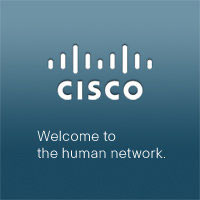

Bike Build
Building a Dream
Teams build real bikes and meet the kids who receive them — our most powerful experience.
From the River Walk to the Pearl and beyond, we come to your San Antonio venue. Give your team an unforgettable shared win — for 5 people or 5,000 — that also gives back to local kids.

San Antonio pairs big-conference capacity with real charm, and it's a natural fit for our work. Whether your group is at the Henry B. González Convention Center, a River Walk hotel, or a resort out toward the Hill Country, we bring a high-energy event that gives back to San Antonio–area kids.
Anywhere in the San Antonio area, we come to your venue. You provide the room; we bring everything else.
From a 5-person leadership team to a 5,000-person general session.
Every bike, board and pair of shoes is donated to children in the San Antonio area.
Producing legendary events since 2003 for 1,500+ companies nationwide.
We've run builds in the halls of the Henry B. González Convention Center, in hotel ballrooms along the River Walk, and at corporate sites near the Pearl. San Antonio groups bring warmth and energy to every event.
Every bike, board and pair of shoes goes to kids right here in the San Antonio area — from the West Side across the wider Bexar County community. Your team builds it; a local child rides away on it.
Beyond the give-back builds, San Antonio is made for The Ultimate Hunt along the River Walk — history, food and clues in one loop.
Every activity is a real product your people build together and donate to children in the San Antonio community.
Teams build real bikes and meet the kids who receive them — our most powerful experience.

Assemble skateboards from a bag of parts and help your people embrace change.

Build durable shoes for kids who've never owned a pair and create a lasting 'Shoe Bank'.
Pairing a shared challenge with a real act of giving is what creates the emotion ordinary team building can't — and the pride your people carry back to work. We've been doing it since 2003.

Our signature give-back activities — bike builds (Building a Dream), skateboard builds (Get On Board) and shoe builds (Sole Purpose) — for groups from 5 to 5,000. Every build is donated to children in the San Antonio community.
Yes. We bring everything to your location anywhere in the San Antonio area — the Henry B. González Convention Center, a River Walk hotel, a corporate campus or a Hill Country resort. You provide the room; we handle the rest.
From 5 to 5,000 people, including conference general sessions. We’ve produced events at world-record scale, and teams we’ve guided have built more than 50,000 bikes for children since 2003.
Pricing depends on group size, the activity and your venue. Most programs are priced per participant with the charitable donation included. Book a call and we'll send a tailored proposal.
You provide the room; we handle everything else — anywhere in the San Antonio area.
Book a call →A few of the thousands of teams who trust us



Tell us your group size, venue and dates. We'll design a San Antonio event your people — and a community of local kids — will never forget.